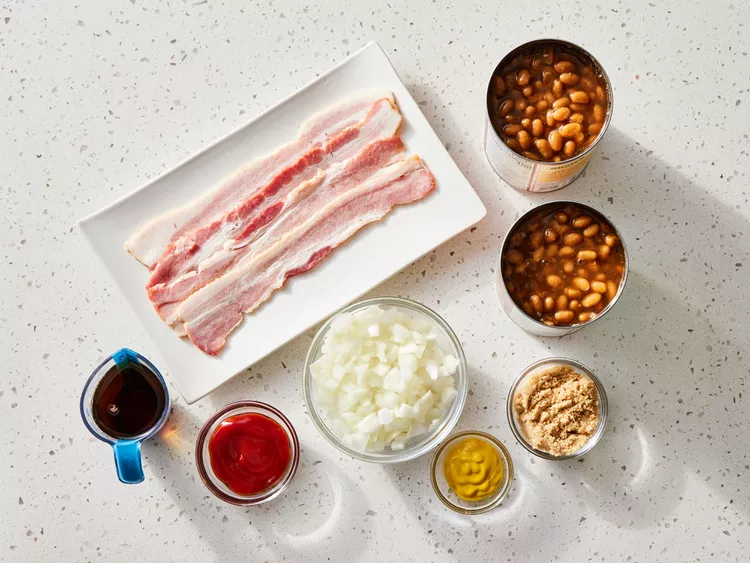
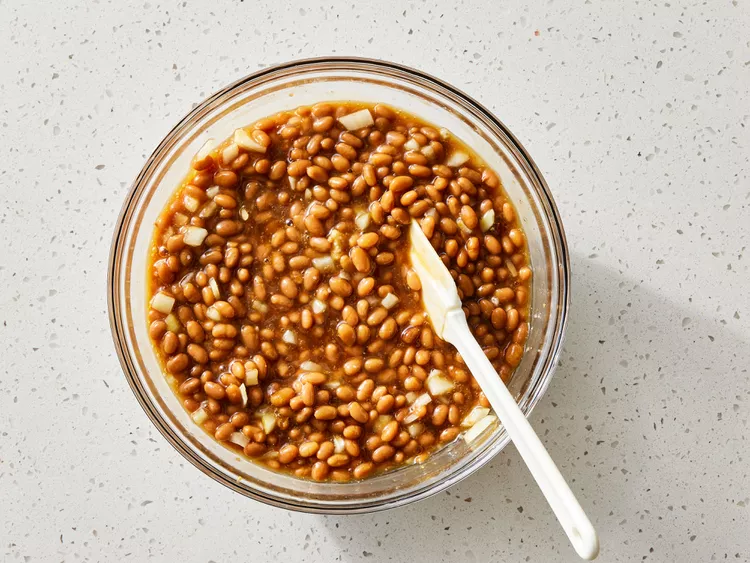

Tangy, sweet, old-fashioned baked beans are made the easy way using canned beans. This is my grandma's favorite semi-homemade recipe. She makes it every Thanksgiving, and we usually end up scraping the pan clean! There are never any leftovers.
Step 1
Gather the ingredients. Preheat the oven to 350 degrees F (175 degrees C).
Step 2
Stir together baked beans, onion, syrup, brown sugar, ketchup, and mustard in a large bowl.
Step 3
Pour into a 9x13-inch baking dish. Lay bacon slices across the top.

Step 4
Bake in the preheated oven until the bacon is browned and the beans have thickened, 35 to 40 minutes.